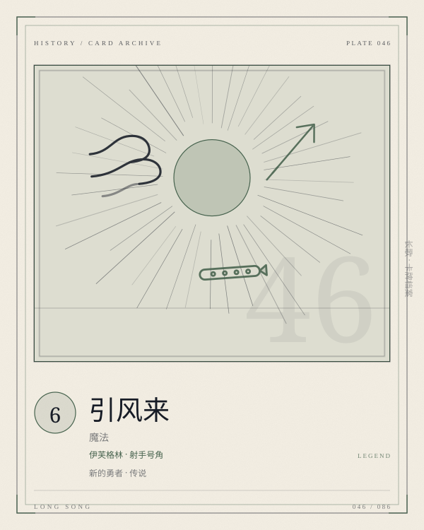

PLATE 046 / 086CALL-WIND
卡面为程序生成的概念图版；卡文与规则以本页正文为准。
CARD / EVE / 魔法
引风来
伊芙格林 · 射手号角
新的勇者传说魔法COST 6御风增幅
【限定】（御风）若伊芙格林已觉醒，具有加二花费。扣取伊芙格林当前防御力的60%。本回合内，使所有射手获得减一行动花费与奋战+1，若此前行动花费已为0，则获得+50攻击力。
- COST
- 6
- C / A / D
- —
- GROUP
- 伊芙格林魔法
- LIMIT
- 1构筑上限
归属 伊芙格林 · 新的勇者 · 传说。上限字段为「1」；原典未列上限的卡，页面不替它补。
关联 LINKS · 出边 + 入边 · 同目标去重
关联不是规则联动。它记录这张卡在设计与叙事上依赖谁、被谁依赖；跨阵营的边只标「对照」。
被检索
风之感知
把引风来视作御风，提前攒够觉醒
被强化
【觉醒】
觉醒后引风来加费，但所有射手的行动更便宜
配套
与风同在
一费射手最吃「行动减一费 + 奋战」
被配套
自然感知
先抽到射手，再让号角吹响
同族
永恒的记忆
三张御风，三种终结方式
同族
狂风呼啸
两张御风共享「扣防御」的代价
词条 KEYWORDS IN TEXT
限定专属魔法只能在所属英雄在场上时使用。
奋战一回合攻击次数 +X。
觉醒获得觉醒面板，同时中止原有蓄能。
ARCHIVIST'S NOTE
肥鱼碎碎念
六费，御风，若伊芙格林已觉醒则加二费；扣取当前防御的 60%；本回合所有射手获得减一行动花费与奋战 +1，若此前行动花费已为 0，则获得 +50 攻击力。
它是伊芙格林的「号角」：不直接打伤害，而是让所有射手多打一次、少花一费。它最适合多射手卡组，但当前卡池里射手很少。
觉醒后加两费，让它变成八费。八费的号角很贵，但它换来的是一整回合的节奏。
—— 归档者，读这张卡的时候